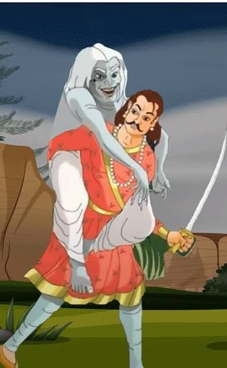

બેતાલ ઉડી ગયા પછી, વિક્રમાદિત્ય ફરીથી શિંસાપાના ઝાડ તરફ દોડ્યો અને ઝાડ પર ઊંધી લટકતી બેતાલને તેના ખભા પર લઈ ગયો અને ચાલ્યો ગયો.
દરમિયાન, બેતાલે ફરી એક વાર રાજાને નવી વાર્તા સંભળાવી અને કહ્યું-
ઘણા સમય પહેલા અહીં ભોગવતી નામનું એક શહેર હતું. રાજા રૂપસેન તે શહેર પર શાસન કરતો હતો. રાજાને લગ્ન કરવાની ખૂબ ઈચ્છા હતી.
એક દિવસ રાજાએ ચિંતામણિ નામના પોપટને પૂછ્યું, "મને કહો કે હું કોની સાથે લગ્ન કરીશ?" પોપટે કહ્યું, "મગધની રાજકુમારી ચંદ્રાવતીને.
" પોપટની વાત સાંભળીને રાજાએ એક જ્યોતિષીને બોલાવ્યો અને તે જ પ્રશ્ન પૂછ્યો. જ્યોતિષીએ પણ રાજાને એવો જ જવાબ આપ્યો જેવો પોપટે આપ્યો હતો.
મગધની રાજકુમારી પણ તેના ભાવિ વર વિશે જાણવા માટે ખૂબ ઉત્સુક હતી. રાજકુમારીએ તેની મૈના મંજરીને પૂછ્યું, “અરે! મને કહો કે હું કોની સાથે લગ્ન કરીશ.
મૈનાએ રાજકુમારીને રાજા રૂપસેન સાથેના લગ્ન વિશે પણ જણાવ્યું. આ સાંભળ્યા બાદ બંને શહેરોમાંથી એકબીજાને લગ્નના આમંત્રણ મોકલવામાં આવ્યા હતા,
જે સ્વીકારવામાં આવ્યા હતા. આ રીતે રાજા રૂપસેન અને રાજકુમારીના લગ્ન થયા. લગ્ન પછી રાણી મૈનાને પણ પોતાની સાથે લઈ આવી.
રાજાએ મંજરી માઈના તેના પોપટ સાથે લગ્ન કરાવ્યા અને બંનેને એક જ પિંજરામાં રાખ્યા.
 એક દિવસ મૈના અને પોપટ વચ્ચે કોઈ વાતને લઈને ઉગ્ર બોલાચાલી થઈ. મૈનાએ ગુસ્સામાં કહ્યું, "પુરુષો પાપી, કપટી અને અન્યાયી છે.
" ત્યારે ગુસ્સે થયેલા પોપટે કહ્યું, "સ્ત્રીઓ લોભી, જૂઠી અને ખૂની હોય છે." બંને વચ્ચેનો ઝઘડો એટલો વધી ગયો કે આ વાત રાજા સુધી પહોંચી.
રાજાએ બંનેને પૂછ્યું, "શું થયું, તમે બંને કેમ લડી રહ્યા છો?" મૈનાએ તરત કહ્યું કે મહારાજ, માણસો બહુ ખરાબ હોય છે અને પછી વાર્તા કહેવા લાગી.
એક દિવસ મૈના અને પોપટ વચ્ચે કોઈ વાતને લઈને ઉગ્ર બોલાચાલી થઈ. મૈનાએ ગુસ્સામાં કહ્યું, "પુરુષો પાપી, કપટી અને અન્યાયી છે.
" ત્યારે ગુસ્સે થયેલા પોપટે કહ્યું, "સ્ત્રીઓ લોભી, જૂઠી અને ખૂની હોય છે." બંને વચ્ચેનો ઝઘડો એટલો વધી ગયો કે આ વાત રાજા સુધી પહોંચી.
રાજાએ બંનેને પૂછ્યું, "શું થયું, તમે બંને કેમ લડી રહ્યા છો?" મૈનાએ તરત કહ્યું કે મહારાજ, માણસો બહુ ખરાબ હોય છે અને પછી વાર્તા કહેવા લાગી.
વર્ષો પહેલા અલ્લાહપુર શહેરમાં મહાધન નામનો શેઠ રહેતો હતો. લગ્નના ઘણા વર્ષો પછી પેલા શેઠના ઘરે છોકરાનો જન્મ થયો.
મહાધન શેઠ તેની સારી રીતે સંભાળ રાખતા હતા. સારા સંસ્કાર મળવા છતાં, શેઠનો દીકરો મોટો થયો અને જુગાર રમવા લાગ્યો.
તેના જુગારની લતને લીધે, તે તેના તમામ પૈસા જુગારમાં હારી ગયો. દરમિયાન શેઠનું અવસાન થયું. તેના જુગારની લતને લીધે,
છોકરા પાસે ન તો પૈસા હતા કે ન તો તેના કમાતા પિતા, તેથી છોકરો તેનું નગર છોડીને ચંદ્રપુરી નગર પહોંચ્યો.
નવા શહેરમાં પહોંચ્યા પછી, છોકરો શાહુકાર હેમગુપ્તાને મળ્યો. છોકરાએ શાહુકારને તેના પિતા વિશે કહ્યું અને તેને ખોટી વાર્તા કહેવાનું શરૂ કર્યું.
તેણે કહ્યું કે તે જહાજ સાથે મોટો સોદો કરીને પરત ફરી રહ્યો છે. તે જ સમયે, દરિયામાં એટલું જોરદાર તોફાન આવ્યું કે તેનું
જહાજ ત્યાં ડૂબી ગયું અને તે સુરક્ષિત રીતે અહીં પહોંચી ગયો.
આ સાંભળીને શાહુકારે તેને પોતાના ઘરમાં રહેવા દીધો. દરમિયાન, શાહુકાર હેમગુપ્તાએ વિચાર્યું કે શેઠનો આ પુત્ર તેની પુત્રી માટે સારો વર સાબિત થઈ શકે છે.
તરત જ શાહુકારે તેની પુત્રીના લગ્ન શેઠના પુત્ર સાથે કરાવી દીધા.
લગ્નના થોડા દિવસો સુધી જમાઈની ખૂબ સારી સારવાર કર્યા પછી, શાહુકારે તેની પુત્રીને ખૂબ પૈસા આપીને વિદાય આપી.
બંનેની સાથે શાહુકારે એક નોકરાણીને પણ મોકલી. રસ્તામાં, શેઠના પુત્રએ તેની પત્નીને કહ્યું, “મને બધા ઘરેણાં આપો. અહીં ઘણા લૂંટારાઓ છે.
તેની પત્નીએ પણ એવું જ કર્યું. દાગીના મળતાની સાથે જ તેણે નોકરાણીની હત્યા કરી તેને કૂવામાં ફેંકી દીધી અને તેની પત્નીને પણ કૂવામાં ધકેલી દીધી.
છોકરી જોર જોરથી રડવા લાગી. તેણીના રડવાનો અવાજ સાંભળીને, એક રાહદારીએ મહિલાને કૂવામાંથી બહાર કાઢી.
કૂવામાંથી બહાર આવતાં જ તે તેના પિતા પાસે ગઈ. તેણીએ તેના શાહુકાર પિતાને સત્ય કહ્યું નહીં,
"કોઈ લૂંટારાએ તેમને લૂંટ્યા અને નોકરાણીની હત્યા કરી." શાહુકારે તેની પુત્રીને આશ્વાસન આપતા કહ્યું,
"ચિંતા ન કર, તારો પતિ જીવિત હશે અને તે ચોક્કસ કોઈ દિવસ પાછો આવશે.
" બીજી બાજુ, છોકરો તેના શહેરમાં પહોંચે છે અને ફરીથી જુગારમાં તેના બધા પૈસા અને ઘરેણાં હારી જાય છે. પૈસા ખતમ થયા પછી તેની હાલત ખૂબ જ ખરાબ થઈ ગઈ.
તેનાથી પરેશાન થઈને છોકરો ફરીથી શાહુકાર પાસે જાય છે. ત્યાં પહોંચતા જ તે તેની પત્નીને મળે છે.
તે તેને જોઈને ખૂબ જ ખુશ થાય છે અને કહે છે કે તે દિવસે જે કંઈ થયું તે તેણે તેના પિતાને કહ્યું નથી.
તે તેના પતિને તે ખોટી વાર્તા કહે છે. શાહુકારે તેના જમાઈને ઘરમાં જોયા કે તરત જ તેણે તેનું સ્વાગત કર્યું.
થોડા દિવસો સુધી શાહુકારના ઘરે રહ્યા પછી, એક રાત્રે અમીરનો દીકરો તેની પત્નીને મારી નાખે છે અને તેના તમામ દાગીના લઈને ભાગી જાય છે.
આ વાર્તા કહ્યા પછી મૈના કહે છે, “મહારાજ, આ બધું મેં મારી આંખે જોયું છે. તેથી જ હું પુરુષોને પાપી કહું છું.”
મૈનાની વાર્તા સાંભળીને રાજા પોપટને કહે છે, "હવે તું મને કહે કે તું સ્ત્રીઓ વિશે ખરાબ કેમ બોલતો હતો.
" આ સાંભળીને પોપટ પણ વાર્તા કહેવાનું શરૂ કરે છે. તે કહે છે કે એક સમયે તે કંચનપુરમાં સાગરદત્ત નામના શેઠના ઘરે રહેતો હતો.
તેમના પુત્રનું નામ શ્રીદત્ત હતું, જેમણે નજીકના શહેર શ્રીવિજયપુરના શેઠ સોમદત્તની પુત્રી સાથે લગ્ન કર્યા હતા.

લગ્ન પછી છોકરો ધંધો કરવા વિદેશ ગયો. તેની પત્ની જયશ્રી તેની આતુરતાથી રાહ જોતી હતી,
પરંતુ 12 વર્ષ વીતી ગયા, પરંતુ તે વિદેશથી પાછો આવ્યો નહીં. એક દિવસ જ્યારે તેના પતિની રાહ જોવામાં આવે છે, ત્યારે તે સ્ત્રી તેના ધાબા પરથી એક પુરુષને આવતા જોવે છે.
તે તેણીને ખૂબ પસંદ કરે છે. તેણી તેને તેના મિત્રના ઘરે આમંત્રણ આપે છે. તે તેની સાથે વાત કરે છે અને તેને દરરોજ તેના મિત્રના ઘરે મળવાનું કહે છે.
હવે શ્રીદત્તની પત્ની જયશ્રી એ યુવકને રોજ મળવા લાગી. આ દરમિયાન થોડા મહિનાઓ વીતી ગયા. દરમિયાન, એક દિવસ જયશ્રીના પતિ શ્રીદત્ત વિદેશથી પાછા ફરે છે.
મહિલા તેના પતિને જોઈને નારાજ થઈ જાય છે. થાકેલા શ્રીદત્ત આરામ કરવા પલંગ પર સૂતાની સાથે જ સૂઈ જાય છે.
તક જોઈને તેની પત્ની યુવકને મળવા તેના મિત્રના ઘરે જાય છે. રાત્રે તેને બહાર જતા જોઈને એક ચોર તેનો પીછો કરે છે.
તે જુએ છે કે તે કોઈ ઘરે ગઈ છે. અફસોસની વાત એ છે કે સાપના ડંખથી યુવકનું મૃત્યુ થયું. જયશ્રી તેની સામે જુએ છે કે તરત જ તેને લાગે છે કે તે સૂઈ રહ્યો છે.
તે તેની નજીક જાય છે, તે જ સમયે નજીકના પીપળના ઝાડ પર બેઠેલું ભૂત મૃત યુવકના શરીરમાં પ્રવેશ કરે છે અને મહિલાનું નાક કાપી નાખે છે અને ફરીથી ઝાડ પર બેસી જાય છે.
રડતી રડતી તે તેના મિત્ર પાસે પહોંચી અને તેને આખી વાત કહી. બધું સાંભળીને તેનો મિત્ર જયશ્રીને શાંતિથી ઘરે જવાની અને જોરથી રડવાની સલાહ આપે છે.
નાક વિશે કોઈ પૂછે કે તરત જ તેને કહો કે તમારા પતિએ નાક કાપી નાખ્યું છે. તેણી પણ એવું જ કરે છે. છોકરીના પિતા શ્રીદત્ત વિશે ફરિયાદ કરે છે.
આ પછી દરેક સભામાં હાજર છે. જલદી રાજાએ છોકરીનું કપાયેલું નાક જોયું, તેણે ગુસ્સાથી તેના પતિને વધસ્તંભે જડાવવાનો નિર્ણય જાહેર કર્યો.
જે ચોરે શ્રીદત્તની પત્નીને રાત્રે ઘરની બહાર જતી જોઈ હતી અને અન્ય વસ્તુઓ પણ તે સભામાં હાજર છે.
રાજા દ્વારા ઉચ્ચારવામાં આવેલી સજા સાંભળીને ચોર ખૂબ જ દુઃખી થાય છે. તેણે કોઈક રીતે હિંમત ભેગી કરી અને રાજાને આખી વાત કહી.
કોઈ તેના પર વિશ્વાસ કરતું નથી, તેથી ચોર કહે છે, "તમે ત્યાં જાઓ અને જુઓ, ત્યાં ભૂત છે અને તે જ રીતે યુવાનની લાશ છે.
" જ્યારે તપાસ કરવામાં આવે તો તે સાચું હોવાનું બહાર આવે છે. આ કહ્યા પછી પોપટ કહે છે, "રાજા, સ્ત્રીઓ ઘણી દુષ્ટ છે."
આટલું કહીને બેતાલ રાજા વિક્રમાદિત્યને પૂછે છે, "મને કહો, સ્ત્રી અને પુરૂષમાં કોણ વધારે પાપી છે?" રાજા થોડીવાર વિચારે છે અને કહે છે,
"સ્ત્રી વધુ પાપી છે." બેતાલ કહે, "કેવી રીતે?" રાજાએ જવાબ આપ્યો, "પરિણીત હોવા છતાં, સ્ત્રીની નજર બીજા પુરુષ પર હતી અને તેણે તેના પતિ સાથે છેતરપિંડી કરી."
સારાંશ :
વ્યક્તિએ ક્યારેય જૂઠું ન બોલવું જોઈએ. જૂઠું બોલવાનું પરિણામ હંમેશા ખરાબ જ આવે છે.